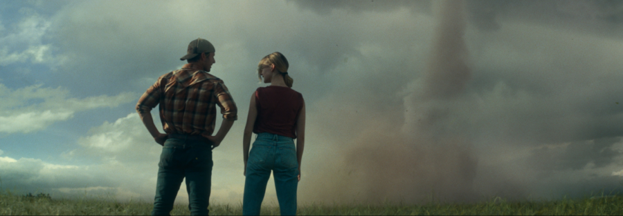

Watching the Weather: TWISTERS (2024) introduced by Rebecca Ewert
TWISTERS (Lee Isaac Chung, 2024, 122 min, Digital)
“This theater wasn’t built to withstand what’s coming!” -Javi, TWISTERS
In TWISTERS, director Lee Isaac Chung takes on Hollywood’s timeless fascination with the disaster genre to craft a thrilling sequel to the 1996 cult classic TWISTER. Building on the original’s winning premise by sending plucky researchers directly into the vortex (all in the name of Science!), TWISTERS follows meteorologist Kate (Daisy Edgar-Jones), haunted by a weather-related tragedy, and social media star Tyler (Glen Powell), as they navigate multiple converging storm systems in the heart of Tornado Alley. The film’s scientific conceit, though more speculative fiction than hard data, one-ups the original film by imagining a technology that, when deployed in the eye of the storm, might stop the devastation–a bit of wish fulfillment in the fight against climate change, or maybe just a more compelling MacGuffin for audiences craving higher stakes?
Indeed, as a rare blockbuster in the age of TikTok, TWISTERS reflects on the threats posed by a changing atmosphere and an evolving media climate, literally bringing the moviehouse in the path of destruction, and encouraging us to consider what makes this art form a relevant space to collectively engage with climate science (or pseudoscience).
To speak to the film’s representations of social responses to disasters and its loaded negotiations of scientific authority, gender, and trauma, the Block will welcome Dr. Rebecca Ewert, Assistant Professor of Instruction in Sociology at Northwestern University, for an introduction.
About the speaker:
Rebecca Ewert is an Assistant Professor of Instruction in Sociology at Northwestern University. Her teaching and research interests lie at the intersection of sociology of the environment, health, gender — especially masculinity — inequality, and culture. Using qualitative methods, Ewert studies the ways that social categories (i.e. gender, race, class, age, etc.) and cultural factors shape our identities, trajectories, and experiences. Ewert’s award-winning research explores these relationships in the contexts of disaster recovery, mental health, the training of medical residents, and in higher education. To read more about her work, visit www.rebeccaewert.com.